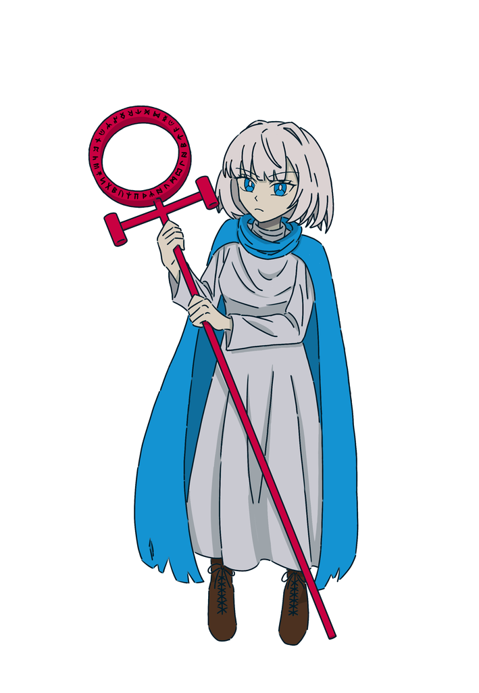

01 / STORY
An apprentice. An ancient city. A world of magic.
A retro pixel-art bullet hell game with a medieval theme
The stage is an ancient city ruled by magic. Explore a medieval world of sorcery, vividly brought to life with pixel art and 3D models.
Take control of a young apprentice mage and defeat the Archmage who rules the city, along with her disciples.
